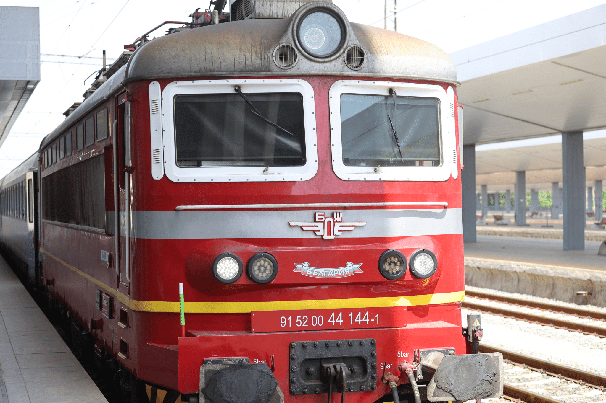
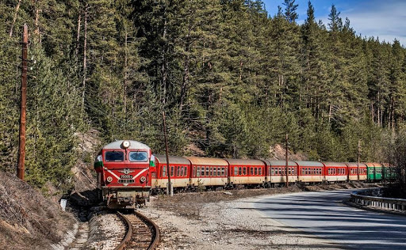

|  |
Влакът ще измине разстоянието Варна-София за 7 часа и 30 минути със средна скорост 62 км/ч |
|
български влак |
|  |
Теснолинейкaта ще измине разстоянието Варна-София за 14 часа със средна скорост 32,5 км/ч |
|
Теснолинейкa |

|
японски влак JR-Maglev MLX01 ще измине разстоянието Варна-София за 1 часа и 6 минути със средна скорост 429 км/ч |
японски влак JR-Maglev MLX01

|
Китайският Maglev Train ще измине разстоянието Варна-София за 2 часа със средна скорост 228,75 км/ч |
Китайският Maglev Train

|
Китайският "куршум" CRH380A ще измине разстоянието Варна-София за 2 часа и 15 минути със средна скорост 200 км/ч |
Китайският "куршум" CRH380A

|
Френският влак Eurostar ще измине разстоянието Варна-София за 3 часа със средна скорост 160 км/ч |
Френският влак Eurostar